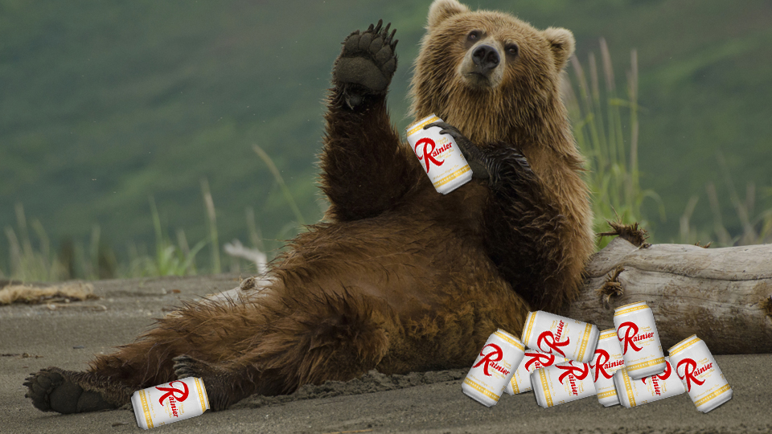

Facts about bears
Bears' diets vary from each species. Polar bears being mostly carnivorous
while panda bears feeding mostly on bamboo.
Bears are well known for their lengthy hibernation periods that take place
in the winter. They go the entire hibernation period without waking and their
heart beat slows to 9bpm.
Bears are most commonly found in North America, Europe, and Asia.
Bears live as long as 30 years in the wild. One captive brown bear lived to the age of 47.
A male bear is called a boar or a he-bear. A female bear is called a sow or
a she-bear. A group of bears is called a sleuth or sloth.
The world’s most widely distributed bear is the brown bear.
However, the American black bear is the world's most common bear species.
North America is home to three of the world’s eight bear species: brown, American black, and polar bears.
Almost two thirds of the bears in the world live in North America.
Once bears breed, they go their separate ways. Male bears do not help the mother
bear raise the cubs. Depending on the breed, intercourse may last a few minutes
(giant panda) or half an hour (polar bear).
Black bears are typically smaller than grizzly bears, have a smaller shoulder hump,
less shaggy fur, longer ears, and a less concave facial profile. Black bear claws
are also smaller and more curved to better climb trees.
Stone-age hunters worshipped and hunted bears at the same time. To show their respect,
they sang and danced and prayed that the bear would forgive them for killing it.
In 2004, a black bear was found unconscious in a campground in Seattle, Washington.
It had broken into a cooler and used its claws and teeth to open dozens of beer cans.
Although it sampled other types of beer, it chose to drink all the cans of only one type
of beer. After its drinking binge, the bear passed out.

The last Bears superbowl appearance was in 2007 where they lost to the
Indianapolis Colts 29 to 17. Their last and only superbowl win was in 1985 where
they beat the New England Patriots 46 to 10. They were revered as one of the best
teams ever.
The Bears last playoff appearance was in 2019 where they lost to the Eagles
15 to 16 on the infamous season ending "double doink".
The Bears are one of the oldest franchises in the NFL who have just eclipsed their
100 year anniversary this season.
Out of the 8 original teams, they claim the most hall of fame players with 28
inductees.